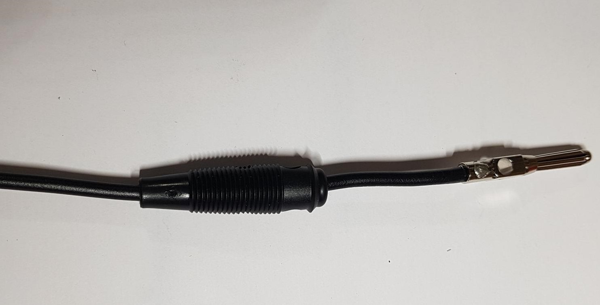

STEP n°2: Assembly of the measurement board¶
Required components |

Description¶

Figure shows the general schematics for the electronic measurement board developed. We have developed a complete “plug and play” measurement board. To measure electrical resistivity with Raspberry Pi. two ADS1115 were used,one for the voltage measurement one for the current measurement, as proposed by Florsch [7]. The ADS1115 is a 16-bit ADC (Analog-to-Digital Converter), with an adaptable gain. The advantage of ADS1115 is that the input signal value could lie between - to + 6.114 V. For the current measurement we have directly integrated the INA282 component, which allows to realize precise current measurement around a shunt resistor. The assembly steps are described in the following steps:
1 |

|
Installation of female header, 1 by10 pins, for ADS1115 |
2 |

|
Soldering of 4 dual-in-line- socket (2 by 2 pins) for optical relay, AQY211EH. |
3 |

|
Soldering of 1 dual-in-line- socket (2 by 9 pins) for INA282. |
4 |

|
Soldering of 1 dual-in-line- socket (2 by 4 pins) |
5 |

|
Soldering of 2 dual-in-line- socket (2 by 4 pins) |
6 |

|
Traco Power Supply 12V to 5V, TDH15 - 1211N |
7 |

|
Four screw terminals for 12V inpout et 5V outpout |
8 |

|
Traco power Supply 12V to 24V, TRN-1215 |
9 |

|
Two screw terminals electrodes M and N |
10 |

|
Four screw terminals, for 12V power supply and for electrodes A and B |
11 |

|
Soldering three capacitors (100nF) |
12 |

|
2 ohms shunt resistor pre-adjustment |
13 |

|
Soldering 2 ohms shunt resistor |
14 |

|
1 Mohms resistors |
15 |

|
Soldering tow 1 Kohms resistors |
16 |

|
Soldering tow 1.5Kohms resistors |
17 |

|
Soldering tow 1.5Kohms resistors |
18 |

|
Female header 2 by 20 pins for Raspberry Pi connection |
19 |

|
View of the female header 2 by 20 pins installation for Raspberry Pi connection |
20 |

|
Fixing MCP23008 component |
21 |

|
Mounting optical relay, AQY211EH |
22 |

|
Mounting LM158 operational amplificator |
23 |

|
Mounting ADS115 board |
24 |

|
Fixing the INA282 |
STEP n°3: Start-up of the measurement board.¶
Required components |
1 |

|
Shutdown the raspberry Pi and unplug the power supply |
2 |
|
Mounting the bottom spacers on the Raspberry Pi (male/female, 11mm, M3) |
3 |

|
Mounting the upper spacers on the Raspberry Pi (female/female, 11mm, M3) |
4 |

|
Mounting the Ohmpi’s measurement board on the Raspberry Pi |
5 |

|
Mounting the Ohmpi’s measurement board on the Raspberry Pi |
6 |

|
Plug the power supply into a socket and connect it to your Raspberry Pi’s power port. |
STEP n°4: Measurement board validation¶
Run the terminal, and write
i2cdetect -y 1
1 |

|
If everything is working, three I2C addresses should appear on the screen. |
- Setting up an equivalent electronic circuit, for this you will need:
4 1kohm resistor (R2)
1 220 ohm resistor (R1)
1 small padboard
Spool of solder
2

Schematic of equivalent electronic circuit test
3 |

|
Préparer le circuit équivalent |
4 |

|
Préparer les cables de connexion aux batterie et les cosses |
5 |
 |
Souder les câbles et les cosses |
6 |

|
Installer les cables rouges sur la borne +12V et cable noir sur la borne ground. |
7 |
|
Installer le circuit de référence |
Run the Thonny IDE and load the code Ohmpy4elec.pi